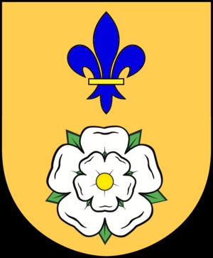

7797 Kerstin Jörgensdotter
* 1640 Bro (O)
† 1700 Brastad (O)
Blev högst 60 år
15594 Jörgen Hansson
* 1615 Bro (O)
† 1670 Bro (O)
Bonde i Nävekärr
Blev högst 55 år
31188 Hans Davidsson
* 1595 Bro (O)
† 1673 Bro (O)
Blev högst 78 år
62376 David Jörgensson
* 1565 Bro (O)
† 1635 Bro (O)
Bonde o Skeppare
Blev högst 70 år
62377 Eline Olofsdotter
* omkring 1560 Bro (O)
† 1611 Bro (O)
Blev ca 51 år

31189 Elsa Christoffersdotter Bruhn
* omkring 1590 Bro (O)
† 1673 Bro (O)
Blev ca 83 år
62378 Christoffer Clausen Bruhn
* omkring 1570 Marstrand (O)
† omkring 1620
Blev ca 50 år
62379 Anna Pedersdotter
* omkring 1577
15595 Margareta Hansdotter
* 1615 Bro (O)
† 1645 Näverkärr, Bro (O)
Blev högst 30 år